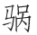

国初已来画鞍马 [1] ，神妙独数江都王 [2] 。将军得名三十载，人间又见真乘黄 [3] 。曾貌先帝照夜白 [4] ，龙池十日飞霹雳 [5] 。内府殷红马脑盘 [6] ，婕妤传诏才人索 [7] 。盘赐将军拜舞归，轻纨细绮相追飞 [8] 。贵戚权门得笔迹 [9] ，始觉屏障生光辉。昔日太宗拳毛

[10] ，近时郭家狮子花 [11] 。今之新图有二马 [12] ，复令识者久叹嗟。此皆骑战一敌万，缟素漠漠开风沙 [13] 。其余七匹亦殊绝 [14] ，迥若寒空动烟雪 [15] 。霜蹄蹴踏长楸间 [16] ，马官厮养森成列 [17] 。可怜九马争神骏 [18] ，顾视清高气深稳。借问苦心爱者谁，后有韦讽前支遁 [19] 。忆昔巡幸新丰宫 [20] ，翠华拂天来向东 [21] 。腾骧磊落三万匹 [22] ，皆与此图筋骨同 [23] 。自从献宝朝河宗 [24] ，无复射蛟江水中 [25] 。君不见金粟堆前松柏里 [26] ，龙媒去尽鸟呼风 [27] 。【题解】
一本题下有“歌”字，一本有“引”字。韦讽，官阆州录事参军，有家在成都。杜甫有《送韦讽上阆州录事参军》诗。曹将军，即曹霸，官左武卫将军，详下《丹青引》诗。曹霸画有《九马图》，苏轼《九马图赞叙》云：“长安薛君绍彭，家藏曹将军《九马图》，杜子美所为作诗者也。”诗作于广德二年（764）杜甫再到成都时。
【评析】
这是一首借咏画马而感慨时事的名作。全诗可分三大段，开头十二句为第一段，先从画照夜白叙起，极写曹霸画艺的高超，玄宗赏赐的殊荣和由此而权贵争相求画的煊赫声名，既为以下描写《九马图》张本，又为末段感慨伏笔。自“昔日太宗拳毛 ”至“后有韦讽前支遁”十四句为第二段，是全诗主体部分，照应题目，正面写《九马图》。写九马，先写拳毛 和狮子花二马。太宗拳毛 ，是唐朝开国打天下时所骑；狮子花，是中兴名将郭子仪因平乱有功所赐。今昔对比，治乱兴衰，深寓感慨。次及七马，然后又九马并说，有分有总，有详有略，错综变化，文势跌宕。最后八句为第三段，照应首段，追怀玄宗，盛衰之叹，感慨无限。就题目言，中段是主，前后是宾；就主题思想言，中段是宾，前后是主。起承转接，抑扬顿挫，结构臻于化境。浦起龙曰：“身历兴衰，感时抚事，唯其胸中有泪，是以言中有物。”（《读杜心解》卷二之二）张溍亦曰：“从画马及真马，从真马及时事，慨叹无穷。”“风格之老，神韵之豪，针线之密，可谓千古绝调”（《读书堂杜诗注解》卷十一）。
【注释】
[1] 国初：指唐开国初期。
[2] 江都王：指李绪，唐太宗李世民侄，多才艺，善书画，尤擅鞍马。
[3] 乘黄：传说中神马名，龙翼而马身，黄帝乘以登仙，又名腾黄、飞黄、訾黄，此以乘黄喻曹霸画马之神妙逼真。
[4] 貌：描摹，写真。先帝：指唐玄宗。照夜白：玄宗所乘骏马名。
[5] 龙池：在长安兴庆宫内。兴庆宫为玄宗登帝位前所居旧宅，故址在今西安市兴庆公园内。飞霹雳：言画之灵奇，能感动神物，挟风雷而至。
[6] 内府：皇家仓库。殷红：深红。马脑：一作“玛瑙”。
[7] 婕（jié）妤（yú）、才人：皆宫中女官名。二句谓曹霸画照夜白得到玄宗奖赏，婕妤传诏命才人取出内府所藏红玛瑙盘赐给他。
[8] 纨：白色细绢。绮：有花纹的丝织品。二句谓贵戚权臣都争着以纨绮向曹霸求画。
[9] 笔迹：指曹霸的画。
[10] 拳毛 （ɡuā）：唐太宗六骏之一，为太宗平定刘黑闼时所乘坐骑。
[11] 郭家：指郭子仪。狮子花：即九花虬，为唐代宗赐给郭子仪的御马。
[12] 新图：指《九马图》。二马：指拳毛 和狮子花。
[13] 缟素：指画绢。漠漠：弥漫貌。因是战马，故打开画绢，似见战地漠漠风沙。
[14] 殊绝：神骏异常。
[15] 迥：远。烟雪：黑白，指马色。烟：一作“霞”。
[16] 霜蹄：骏马之蹄。语出《庄子•马蹄》：“马蹄可以践霜雪。”蹴（cù）：踢。长楸间：犹言大道上。古时种楸树于大道两旁，故云。曹植《名都篇》：“走马长楸间。”
[17] 厮养：犹厮役，指养马的役卒。森成列：排列成行。
[18] 可怜：可爱。神骏：神奇骏逸。
[19] 支遁：字道林，东晋高僧。《世说新语•言语》：“支道林尝养马数匹，或言：‘道人畜马不韵。’支曰：‘贫道重其神骏耳。’”
[20] 巡幸：帝王巡视。新丰宫：京兆府昭应县，本名新丰，有宫在骊山下，称温泉宫，天宝六载（747）更名华清宫，故址在今西安临潼骊山麓。
[21] 翠华：用翠鸟羽毛装饰的旗帜，指皇帝仪仗。新丰在长安以东，故云“来向东”。
[22] 腾骧（xiānɡ）：奔腾超越。磊落：众多貌。
[23] 筋骨同：谓玄宗厩马三万匹与曹霸所画九马骨相神态相同。《列子•说符》篇：“良马可形容筋骨相也。”
[24] 河宗：即河伯，为河神。《穆天子传》卷一载：天子西征，“猎于渗泽，于是得白狐、玄貉焉，以祭于河宗”，“天子授河宗璧，河宗柏夭受璧，西向沉璧于河，再拜稽首”。此以穆天子西征，喻指玄宗西奔幸蜀。
[25] 射蛟：《汉书•武帝纪》载：元封五年，武帝南巡，“自寻阳浮江，亲射蛟江中，获之”。此以汉武帝比唐玄宗，时玄宗已死，故曰“无复”。
[26] 金粟堆：指玄宗陵墓。玄宗葬奉先县（今陕西蒲城）东北金粟山，其陵曰泰陵。
[27] 龙媒：指骏马。《汉书•礼乐志》载《天马歌》：“天马来，龙之媒。”